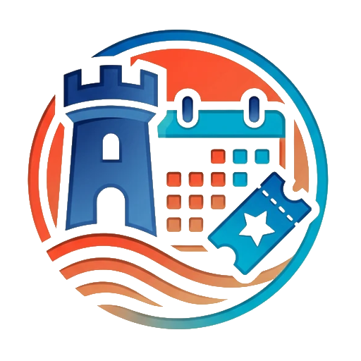

Advent i zbivanja
Kalendar Božićnog grada i Fritulice.
Učitavam događanja…
Jedna pretplata na sva događanja. Datoteka se osvježi kad netko doda redak u tablicu na GitHubu.
Skeniraj kamerom mobitela. Kod vodi na istu calendar.ics adresu.
calendar.ics
Pretplata pokriva cijeli kalendar. Za trenutne filtere koristi „Preuzmi odabir”.
kastela.live je popis događanja. Na mobitelu svaki događaj staviš u svoj kalendar dodirom. Kalendar pita za potvrdu, a prazna datoteka se ne sprema.
Na iPhoneu obavijest radi nakon što stranicu dodaš na početni zaslon i otvoriš je odatle.
Na iPhoneu obavijest stiže tek kad je kastela.live instaliran kao aplikacija.
Za popis događanja potreban je JavaScript. Datoteka data/events.csv i calendar.ics i dalje su na ovoj adresi.
data/events.csv